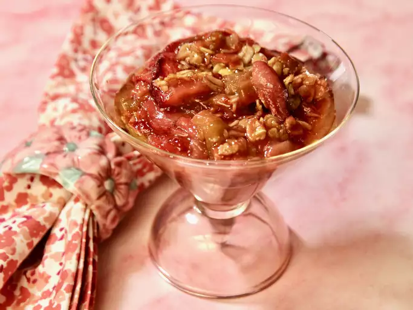

Strawberry Rhubarb Crisp

Description
This strawberry rhubarb crisp is perfect for those who wonder what to do with that big rhubarb plant in the garden. This recipe is your answer — it will have you coming back for more!
This fruit strawberry rhubarb crisp, complete with a crunchy oat topping, is easy to make and will satisfy any sweet tooth.
Ingredients
- Fruit: Of course, you’ll need fresh strawberries and fresh rhubarb.
- Sugar: White sugar perfectly balances the tart rhubarb, while brown sugar sweetens the topping.
- Flour: All-purpose flour goes into the fruit layer and the topping.
- Oats: Use a cup of rolled oats.
- Butter: A cup of butter lends richness to the sweet oat topping.
Steps
- Make the first layer with fruit, sugar, and flour. Place in the baking dish.
- Make the topping, then sprinkle it over the fruit layer.
- Bake in the preheated oven until the topping is crisp and lightly browned.